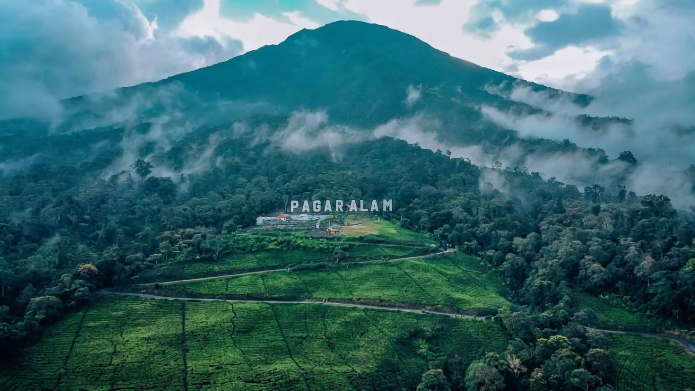
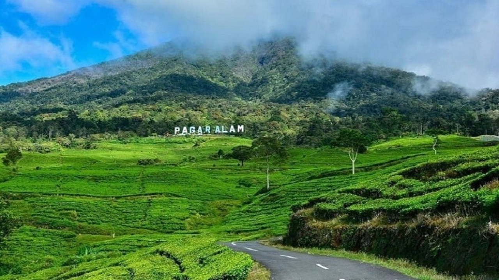
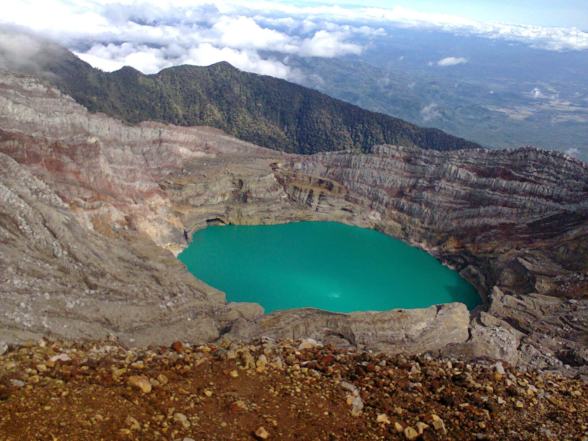

Selamat Datang di Gunung Dempo, Pagar Alam!
Destinasi Wisata Alam Terindah di Sumatera Selatan
Beranda - Selamat Datang!
Gunung Dempo adalah gunung berapi tertinggi di Sumatera Selatan, terletak di Kabupaten Pagar Alam. Dengan ketinggian 3.173 mdpl, gunung ini menawarkan petualangan alam yang tak terlupakan.
Deskripsi Gunung Dempo
Gunung Dempo merupakan gunung api yang aktif dan terakhir kali meletuas pada tahun 2009. Gunung ini juga dikenal sebagai salah satu gunung api yang paling aktif di Sumatra Selatan.
Gunung Dempo memiliki jalur pendakian yang cukup populer bagi para pendaki yang ingin menikmati pemandangan indah di sekitar gunung dan mencapai puncaknya. Terdapat beberapa jalur pendakian yang tersedia, namun jalur yang paling umum adalah melalui kawasan air terjun Puncak Lawang, dengan rute pendakian yang relatif mudah dan diperkirakan dapat diselesaikan dalam waktu sekitar 5-7 jam.
Selain menjadi tujuan wisata pendakian, Gunung Dempo juga dikenal sebagai sumber penghasil kopi berkualitas tinggi di wilayah Sumatra Selatan. Di sekitar gunung terdapat banyak kebun kopi yang dapat dikunjungi oleh wisatawan untuk melihat proses produksi kopi secara langsung.
Fasilitas Tersedia
- Pos pendakian dan pemandu lokal.
- Area camping di kaki gunung.
- Homestay di Pagar Alam.
- Akses transportasi dari Palembang.
Galeri Foto
 
Hubungi Kami
Untuk informasi lebih lanjut, hubungi Dinas Pariwisata Pagar Alam:
Email: info@pariwisatapagaralam.go.id
Telepon: (0731) 123456
© 2025 Promosi Wisata Gunung Dempo, Pagar Alam. Dibuat dengan HTML, CSS, dan fitur dasar web.